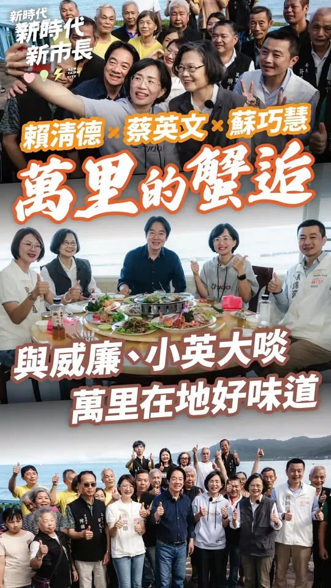
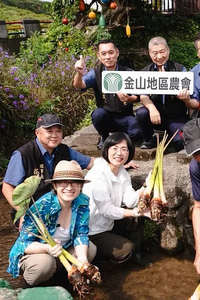
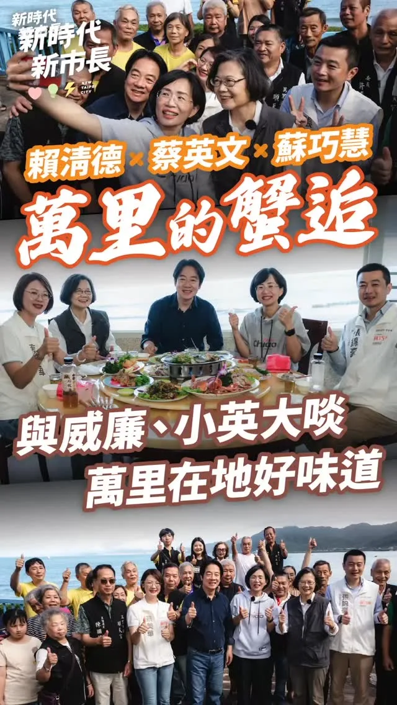
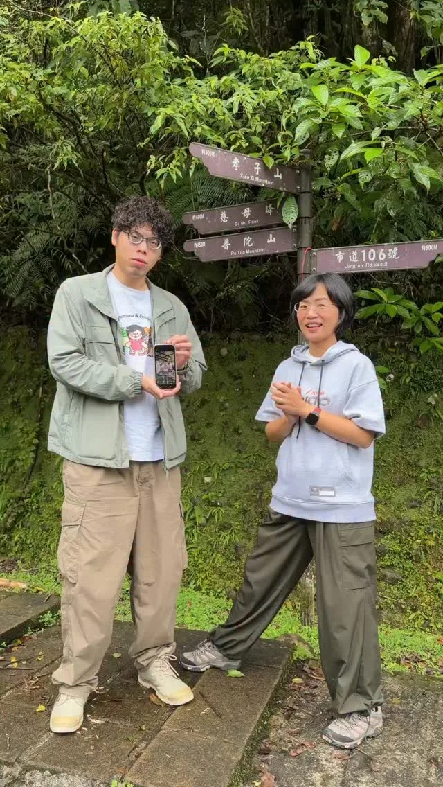
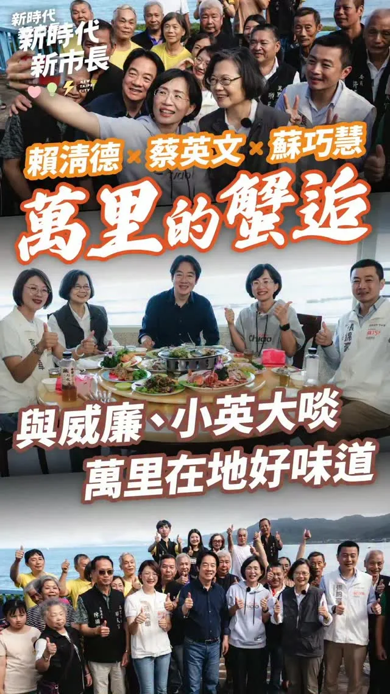
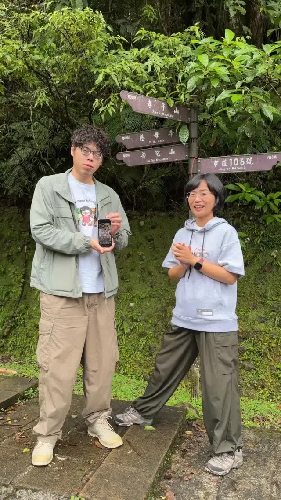

蘇巧慧su.chiaohui
@su.chiaohui:板橋市場走透透！一起拚就會贏！ 連續兩天來到板橋福德市場、黃石市場和國泰市場掃街，謝謝鄉親們總熱情的為我加油，讓我一大早就充滿能量！ 還有支持者很早就在市場入口等我，甚至把「2026新北慧贏」手搖旗改造成獨一無二的手提袋，看到的時候真的又驚喜、又感動，大家真的都超有創意❤️ 每次走進市場，都能感受到滿滿的人情味，謝謝大家不斷為我打氣，我會繼續努力拚，一起迎接新北新時代！
Accounts
| 平台 | 帳號 | 已收錄貼文 | 最後更新 |
|---|---|---|---|
| 官網 | https://chiao.tw/ | 30 | 2026-09-15 00:00 |
| https://www.facebook.com/chiaohui.su | 116 | 2026-09-16 16:35 | |
| https://www.instagram.com/su.chiaohui/ | 147 | 2026-09-15 20:09 | |
| YouTube | https://www.youtube.com/channel/UCBybqVtDU2YgADc8tBqUz5A | 81 | 2026-09-16 12:01 |
| LINE 官方帳號 | http://line.me/ti/p/%40suchiaohui | 0 | — |
| Threads | https://www.threads.com/@su.chiaohui | 170 | 2026-09-16 16:42 |
| Podcast | https://open.spotify.com/show/06fXdjNXspAe1QLML8EsAv | 7 | 2026-09-10 15:00 |
Timeline
顯示 551 / 551 則
@su.chiaohui:板橋市場走透透！一起拚就會贏！ 連續兩天來到板橋福德市場、黃石市場和國泰市場掃街，謝謝鄉親們總熱情的為我加油，讓我一大早就充滿能量！ 還有支持者很早就在市場入口等我，甚至把「2026新北慧贏」手搖旗改造成獨一無二的手提袋，看到的時候真的又驚喜、又感動，大家真的都超有創意❤️ 每次走進市場，都能感受到滿滿的人情味，謝謝大家不斷為我打氣，我會繼續努力拚，一起迎接新北新時代！
@su.chiaohui:原來數學這麼好玩！ 「水獺媽媽數感樂園」等你來挑戰🎉 數學不只出現在課本裡，也藏在我們生活中的每個角落！ 這次水獺媽媽和 @numeracylabtw 數感實驗室合作，透過遊戲、觀察和動手操作，把數學變成一場場的挑戰，讓孩子邊玩邊發現數學的樂趣！ 歡迎爸爸媽媽帶著孩子一起來動動腦，挑戰有趣的數學關卡🥳 📍水獺媽媽數感樂園 時間｜9/20（日）09:00-12:00 地點｜新店耕莘學校 學生活動中心（新店區民族路112號）
A "Crab-tivating" Encounter in Wanli! ft. President Lai Ching-te and President Tsai Ing-wen

金牌廚師挺巧慧！打造 #新北美食繁星！ 感謝「水蛙師」張和錦榮譽總會長，張和漢總會長，「龍師傅」黃景龍副總會長，以及上千位餐飲好朋友相挺！我也向大家報告未來努力的方向： 🌟跨界串連、強強聯手，打造新北美食繁星 串連餐飲、影視音、設計與商圈，推出 #特色美食地圖，讓大家循著在地好滋味深遊新北！ ⚙️推廣 #智慧餐飲、職務再設計緩解缺工 導入智慧管理產品，讓科技搞定重複工作；媒合資深職人，提升營運效率。 🤝修正制度，守護市民飲食健康 比照行政院規格，修正《新北市食品安全衛生管理自治條例》；推動 #3章1Q 延伸實施，讓民眾吃得更安心健康。 新北擁有最多元的美食文化，我們一起努力，把新北的好味道推向更大的舞台，也讓更多人因此認識新北、愛上新北！

上個禮拜週末感謝萬里子弟 賴清德總統邀請我和 蔡英文 Tsai Ing-wen小英總統 ，以及在地的 新北市議員張錦豪議員、蔡美華 汐金萬 挺美的議員候選人一起到萬里龜吼走走～ 新北真的很美，我真的很希望可以把北海岸的美景、美食介紹給更多好朋友，希望新北成為台灣人安居樂業的首選，外國人一生必訪的城市。

Picking taro in Jinshan together?! ft. Vice President Bi-khim Hsiao
@su.chiaohui:新住民挺巧慧！一起生活一起拚，打造多元族群共榮的城市！ 謝謝來自各國的好朋友，穿著隆重的傳統服飾來幫我加油，為我成立「新住民後援會」，還有越南的姊妹送上春捲、西藏的朋友為我掛上哈達，給我滿滿的祝福，真的非常感動！ 我會繼續努力，把新北市打造成最了解新住民的城市！
新住民 新住民挺巧慧！一起生活一起拚，打造多元族群共榮的城市！ 我一直希望，未來的市政府能更貼近所有新住民朋友的心情，理解大家在生活、工作上的需要，也期望用更進步的政策陪伴大家。 2026.09.14

和新北隊的夥伴們一起，為大家帶來更多元、漂亮的新北！ 這兩天我接連到中和、土城參與了 吳昇翰、 張嘉玲舉辦的親子活動，不但感受大小朋友的活力，也再一次和每一位家長報告，未來我一定會從孩子的高度出發，重新檢視新北的公共設施是否真正符合孩子的需求，讓家庭出門更加安心和便利！ 我會建置 #臨時托育查詢平台，同時增加夜間托育場所與服務量能，為不同工作型態家庭提供實際的照顧，做每一位家長的神隊友。 下個禮拜，我還會和 #數感實驗室 合作，在 #新店耕莘專校 舉辦「#水獺媽媽數感樂園」活動，讓數學融入生活，歡迎大家一起來哦！ 我也參與了 張志豪 的後援會成立茶會，志豪過去擔任議員就一直推動「興南夜市活化再復興運動」，希望為地方商圈帶動觀光人潮，這跟我所提出的「地方商圈」政見一致，未來我會提高新北商圈補助，幫助商圈改善硬體設施、優化週邊的交通規劃，讓民眾可以更輕鬆、舒適的到新北各商圈觀光旅遊，吸引更多人來新北觀光。 接下來又是新的一週，我會繼續為大家衝！

爬山專業戶小英 @tsai_ingwen 蔡英文來啦🤩巧慧山友後援會正式成立 打造 #新北大縱走 山林步道品牌！ 我一直相信，新北的「偏鄉」從不是偏鄉，而是寶藏，我們有最豐富的山林和海洋資源，今天我也和小英總統正式成立山友後援會，透過四大面向，降低登山入門門檻，讓更多人願意親近山林： 1️⃣為新北的山林步道分級、分眾 從輕鬆入門、單日健行到跨日縱走路線都有，讓親子家庭、資深山友，都能找到最適合自己的選擇，安心爬山。 2️⃣增加大眾運輸班次，縮短大眾登山轉乘的時間 規劃完整的交通接駁路網，讓登山客不必一再轉車，就能抵達登山口。如果是「A進B出」路線，也加強末端接駁，讓登山入門門檻更低、更方便。 3️⃣將登山活動與老街商圈、歷史人文景點共同串聯 讓所有來訪新北的山友，還可以暢遊周邊的老街商圈，體驗新北山城深厚的歷史文化，更振興地方商圈。 4️⃣打造山林教育中心，真正向山致敬 我將在烏來打造一座「山林教育中心」，結合原住民族文化、生態保育與登山安全，推廣戶外搜救技能與環境教育，讓新北成為懂得敬山、向世界推廣山林文化的指標城市。 新的時代，新北需要新的觀念和做法，未來我擔任市長，會從各方面縮短交通接駁、升級硬體設施，打造「新北大縱走」品牌，新北一定會是國人登山、親近山林的首選城市！
板橋市場走透透！一起拚就會贏！ 連續兩天來到板橋 #福德市場、 #黃石市場 和 #國泰市場 掃街，謝謝鄉親們總熱情的為我加油，讓我一大早就充滿能量！ 還有支持者很早就在市場入口等我，甚至把「2026新北慧贏」手搖旗改造成獨一無二的手提袋，看到的時候真的又驚喜、又感動，大家真的都超有創意❤️ 每次走進市場，都能感受到滿滿的人情味，謝謝大家不斷為我打氣，我會繼續努力拚，一起迎接新北新時代！
原來數學這麼好玩！ #水獺媽媽數感樂園 等你來挑戰🎉 數學不只出現在課本裡，也藏在我們生活中的每個角落！ 這次水獺媽媽和 @numeracylabtw 數感實驗室合作，透過遊戲、觀察和動手操作，把數學變成一場場的挑戰，讓孩子邊玩邊發現數學的樂趣！ 歡迎爸爸媽媽帶著孩子一起來動動腦，挑戰有趣的數學關卡🥳 📍水獺媽媽數感樂園 時間｜9/20（日）09:00-12:00 地點｜新店耕莘學校 學生活動中心（新店區民族路112號）

@su.chiaohui:金牌廚師挺巧慧！感謝上千位餐飲好朋友相挺！我也向大家報告未來努力的方向： 🌟跨界串連、強強聯手，打造新北美食繁星 ⚙️推廣智慧餐飲、職務再設計緩解缺工 🤝修正制度，守護市民飲食健康 新北擁有最多元的美食文化，我們一起努力，把新北的好味道推向更大的舞台，也讓更多人因此認識新北、愛上新北！

@su.chiaohui:上個禮拜週末感謝萬里子弟 @william_chingte 賴清德總統邀請我和 @tsai_ingwen 小英總統 ，以及在地的 @easyhigh_dpp 張錦豪議員、@bihua_tw 蔡美華議員候選人一起到萬里龜吼走走～ 新北真的很美，我真的很希望可以把北海岸的美景、美食介紹給更多好朋友，希望新北成為台灣人安居樂業的首選，外國人一生必訪的城市。
民生資訊 金牌廚師挺巧慧！打造「新北美食繁星」！ 我一直希望，未來的市政府能更貼近所有新住民朋友的心情，理解大家在生活、工作上的需要，也期望用更進步的政策陪伴大家。 2026.09.15

樹蛙哥哥的推薦水獺媽媽樂園的影片真的奇妙地破1萬讚了！ 所以我信守承諾，帶他出去玩🎉 我們一起爬了平溪的孝子山，再搭火車到菁桐百年車站，不過樹蛙哥哥只有吃美食的時候，比較不厭世🤔 接下來還有更多水獺媽媽活動！這次我們和「數感實驗室」合作，把數學變好玩，帶大家一起透過遊戲認識數學的奧妙。當然，也歡迎來找樹蛙哥哥玩！ 📍水獺媽媽數感樂園 時間｜9/20（日）09:00-12:00 地點｜新店耕莘學校 學生活動中心（新店區民族路112號）

新住民挺巧慧！一起生活一起拚，打造多元族群共榮的城市！ 謝謝來自各國的好朋友，穿著隆重的傳統服飾來幫我加油，為我成立「新住民後援會」，還有越南的姊妹送上春捲、西藏的朋友為我掛上哈達，給我滿滿的祝福，真的非常感動！ 大家離開熟悉的家鄉，在不同的語言和文化中生活、奮鬥，真的需要很大的勇氣。所以我一直希望，未來的市政府能更貼近所有新住民朋友的心情，理解大家在生活、工作上的需要，也期望用更進步的政策，陪伴大家在新北市落地生根、發揮所長。 未來，我要增設「新住民社區諮詢站」，讓政府的資訊和服務走進大家熟悉的社交場域；成立「新住民創業輔導團」，以「陪伴型」的服務，由專業導師帶大家從學習、就業一路走到創業；也要支持多元文化創作，讓不同語言與文化，有更大的舞台可以發揮。 我會繼續努力，把新北市打造成最了解新住民的城市！

@su.chiaohui:和新北隊的夥伴們一起，為大家帶來更多元、漂亮的新北！ 這兩天我接連到中和、土城參與了吳昇翰、張嘉玲舉辦的親子活動，不但感受大小朋友的活力，也再一次和每一位家長報告，未來我一定會從孩子的高度出發，重新檢視新北的公共設施是否真正符合孩子的需求，讓家庭出門更加安心和便利！ 我會建置臨時托育查詢平台，同時增加夜間托育場所與服務量能，為不同工作型態家庭提供實際的照顧，做每一位家長的神隊友。 我也參與了張志豪的後援會成立茶會，志豪過去擔任議員就一直推動「興南夜市活化再復興運動」，這跟我所提出的「地方商圈」政見一致，未來我會提高新北商圈補助，幫助商圈改善硬體設施、優化週邊的交通規劃，讓民眾可以更輕鬆、舒適的到新北各商圈觀光旅遊，吸引更多人來新北觀光。 接下來又是新的一週，我會繼續為大家衝！

爬山專業戶小英 蔡英文 Tsai Ing-wen 來啦🤩巧慧山友後援會正式成立 打造 #新北大縱走 山林步道品牌！ 我一直相信，新北的「偏鄉」從不是偏鄉，而是寶藏，我們有最豐富的山林和海洋資源，今天我也和小英總統正式成立山友後援會，透過四大面向，降低登山入門門檻，讓更多人願意親近山林： 1️⃣為新北的山林步道分級、分眾 從輕鬆入門、單日健行到跨日縱走路線都有，讓親子家庭、資深山友，都能找到最適合自己的選擇，安心爬山。 2️⃣增加大眾運輸班次，縮短大眾登山轉乘的時間 規劃完整的交通接駁路網，讓登山客不必一再轉車，就能抵達登山口。如果是「A進B出」路線，也加強末端接駁，讓登山入門門檻更低、更方便。 3️⃣將登山活動與老街商圈、歷史人文景點共同串聯 讓所有來訪新北的山友，還可以暢遊周邊的老街商圈，體驗新北山城深厚的歷史文化，更振興地方商圈。 4️⃣打造山林教育中心，真正向山致敬 我將在烏來打造一座「山林教育中心」，結合原住民族文化、生態保育與登山安全，推廣戶外搜救技能與環境教育，讓新北成為懂得敬山、向世界推廣山林文化的指標城市。 新的時代，新北需要新的觀念和做法，未來我擔任市長，會從各方面縮短交通接駁、升級硬體設施，打造「新北大縱走」品牌，新北一定會是國人登山、親近山林的首選城市！
今天有位萬里子弟請我來到龜吼魚港，要請我吃螃蟹，順便邀請了一位愛吃香菜的嘉賓一起，大家猜猜等等哪道菜會加香菜?
9/20 (Sun) "Otter Mom's Math Sense Paradise" awaits your challenge!
原來數學這麼好玩！ #水獺媽媽數感樂園 等你來挑戰🎉 數學不只出現在課本裡，也藏在我們生活中的每個角落！ 這次水獺媽媽和 數感實驗室 Numeracy Lab 合作，透過遊戲、觀察和動手操作，把數學變成一場場的挑戰，讓孩子邊玩邊發現數學的樂趣！ 歡迎爸爸媽媽帶著孩子一起來動動腦，挑戰有趣的數學關卡🥳 📍水獺媽媽數感樂園 時間｜9/20（日）09:00-12:00 地點｜新店耕莘學校 學生活動中心（新店區民族路112號）
金牌廚師挺巧慧！打造 #新北美食繁星！ 感謝 #水蛙師張和錦 榮譽總會長，#張和漢 總會長，台菜王子黃景龍 副總會長，以及上千位餐飲好朋友相挺！我也向大家報告未來努力的方向： 🌟跨界串連、強強聯手，打造新北美食繁星 串連餐飲、影視音、設計與商圈，推出 #特色美食地圖，讓大家循著在地好滋味深遊新北！ ⚙️推廣 #智慧餐飲、職務再設計緩解缺工 導入智慧管理產品，讓科技搞定重複工作；媒合資深職人，提升營運效率。 🤝修正制度，守護市民飲食健康 比照行政院規格，修正《#新北市食品安全衛生管理自治條例》；推動 #3章1Q 延伸實施，讓民眾吃得更安心健康。 新北擁有最多元的美食文化，我們一起努力，把新北的好味道推向更大的舞台，也讓更多人因此認識新北、愛上新北！

上個禮拜週末感謝萬里子弟 #賴清德 總統邀請我和 #蔡英文 小英總統 ，以及在地的 #張錦豪 議員、#蔡美華 議員候選人一起到萬里龜吼走走～ 新北真的很美，我真的很希望可以把北海岸的美景、美食介紹給更多好朋友，希望新北成為台灣人安居樂業的首選，外國人一生必訪的城市。
環境資源 期望能將美海岸美麗的風景、美食介紹給更多好朋友 新北真的很美，我真的很希望可以把北海岸的美景、美食介紹給更多好朋友，希望新北成為台灣人安居樂業的首選，外國人一生必訪的城市。 2026.09.15

@su.chiaohui:樹蛙哥哥的推薦水獺媽媽樂園的影片真的奇妙地破1萬讚了！ 所以我信守承諾，帶他出去玩🎉 我們一起爬了平溪的孝子山，再搭火車到菁桐百年車站，不過樹蛙哥哥只吃美食的時候，比較不厭世🤔 接下來還有更多水獺媽媽活動！這次我們和「數感實驗室」合作，把數學變好玩，帶大家一起透過遊戲認識數學的奧妙。當然，也歡迎來找樹蛙哥哥玩！ 📍水獺媽媽數感樂園 時間｜9/20（日）09:00-12:00 地點｜新店耕莘學校 學生活動中心（新店區民族路112號）

新住民挺巧慧！一起生活一起拚，打造多元族群共榮的城市！ 謝謝來自各國的好朋友，穿著隆重的傳統服飾來幫我加油，為我成立「新住民後援會」，還有越南的姊妹送上春捲、西藏的朋友為我掛上哈達，給我滿滿的祝福，真的非常感動！ 大家離開熟悉的家鄉，在不同的語言和文化中生活、奮鬥，真的需要很大的勇氣。所以我一直希望，未來的市政府能更貼近所有新住民朋友的心情，理解大家在生活、工作上的需要，也期望用更進步的政策，陪伴大家在新北市落地生根、發揮所長。 未來，我要增設「新住民社區諮詢站」，讓政府的資訊和服務走進大家熟悉的社交場域；成立「新住民創業輔導團」，以「陪伴型」的服務，由專業導師帶大家從學習、就業一路走到創業；也要支持多元文化創作，讓不同語言與文化，有更大的舞台可以發揮。 我會繼續努力，把新北市打造成最了解新住民的城市！

和新北隊的夥伴們一起，為大家帶來更多元、漂亮的新北！ 這兩天我接連到中和、土城參與了吳昇翰、張嘉玲舉辦的親子活動，不但感受大小朋友的活力，也再一次和每一位家長報告，未來我一定會從孩子的高度出發，重新檢視新北的公共設施是否真正符合孩子的需求，讓家庭出門更加安心和便利！ 我會建置 #臨時托育查詢平台，同時增加夜間托育場所與服務量能，為不同工作型態家庭提供實際的照顧，做每一位家長的神隊友。 下個禮拜，我還會和 #數感實驗室 合作，在 #新店耕莘專校 舉辦「#水獺媽媽數感樂園」活動，讓數學融入生活，歡迎大家一起來哦！ 我也參與了張志豪的後援會成立茶會，志豪過去擔任議員就一直推動「興南夜市活化再復興運動」，希望為地方商圈帶動觀光人潮，這跟我所提出的「地方商圈」政見一致，未來我會提高新北商圈補助，幫助商圈改善硬體設施、優化週邊的交通規劃，讓民眾可以更輕鬆、舒適的到新北各商圈觀光旅遊，吸引更多人來新北觀光。 接下來又是新的一週，我會繼續為大家衝！

@su.chiaohui:爬山專業戶小英 @tsai_ingwen 蔡英文來啦🤩巧慧山友後援會正式成立 打造「新北大縱走」山林步道品牌！ 我一直相信，新北的「偏鄉」從不是偏鄉，而是寶藏，我們有最豐富的山林和海洋資源，今天我也和小英總統正式成立山友後援會，透過四大面向，降低登山入門門檻，讓更多人願意親近山林： 1️⃣為新北的山林步道分級、分眾 從輕鬆入門、單日健行到跨日縱走路線都有，讓親子家庭、資深山友，都能找到最適合自己的選擇，安心爬山。 2️⃣增加大眾運輸班次，縮短大眾登山轉乘的時間 規劃完整的交通接駁路網，讓登山客不必一再轉車，就能抵達登山口。如果是「A進B出」路線，也加強末端接駁，讓登山入門門檻更低、更方便。 3️⃣將登山活動與老街商圈、歷史人文景點共同串聯 讓所有來訪新北的山友，還可以暢遊周邊的老街商圈，體驗新北山城深厚的歷史文化，更振興地方商圈。 4️⃣打造山林教育中心，真正向山致敬 我將在烏來打造一座「山林教育中心」，結合原住民族文化、生態保育與登山安全，推廣戶外搜救技能與環境教育，讓新北成為懂得敬山、向世界推廣山林文化的指標城市。

@su.chiaohui:今天有位萬里子弟請我來到龜吼魚港，要請我吃螃蟹，順便邀請了一位愛吃香菜的嘉賓一起，大家猜猜等等哪道菜會加香菜？ @william_chingte @tsai_ingwen